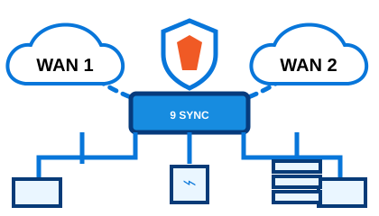
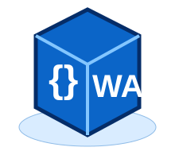
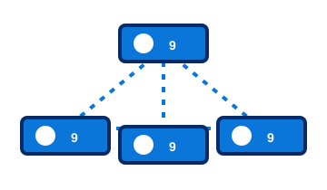

A FreeBSD-based network operating system
powered by Go, jails, WASM, and Plan 9 ideas
GoSense9 is a modular network OS
for routers, gateways, edge appliances,
and clustered infrastructure.
FreeBSD
KernelJailsGo App
StoreWASMP9P9 Cluster
FabricPXE/iPXE
Boot
2HOW THE SYSTEM IS CONCEIVED
▦ Cluster orchestrator over P9 protocol
◇ WASM runtime + orchestrator
▣ Go App Store services
▥ Jails for isolation
🛡 PF firewall / NAT / routing / VLANs / VPN
↯ FreeBSD Kernel + drivers + networking
Minimal GoSense9 Base System
▧ PXE / iPXE Network Boot
▤ Hardware / Bare Metal / VM
3CORE FOUNDATION
- FreeBSD kernel for stability and performance
- Minimal, secure, appliance-style base OS
- Optimized for routing, firewalling, and edge services
- Boot environments and snapshots ready for safe upgrades
- Simple web UI + CLI + API driven management
4ISOLATION WITH JAILS
JAIL
01JAIL
02JAIL
03JAIL
N
- Service isolation using FreeBSD jails
- Dedicated network stacks / VNET-ready design
- Safer app deployment than mixing everything in the base system
- Easy rollback, upgrade, and service separation
5NETWORKING ENGINE

- Routing, NAT, firewalling, VLANs, DHCP, DNS, VPN
- Multi-WAN and edge gateway scenarios
- Designed for small appliances and larger deployments
- Clear traffic control and policy management
6GO APP STORE
Caddyweb server /
reverse proxy
Traefikedge routing /
ingress
CoreDNSDNS service
Headscaleprivate mesh
coordination
AdGuard HomeDNS filtering
Prometheusmetrics
monitoring
MinIOobject
storage
Syncthingfile sync
Resticbackup
VictoriaMetricstime-series
monitoring
◇ All apps are packaged for easy install, upgrade, and isolation.
7WASM EVERYWHERE

- Run lightweight sandboxed workloads
- Portable application modules
- Fast startup and efficient edge execution
- Ideal for plugins, filters, automation, and microservices
- Managed by a built-in WASM orchestrator
8P9 CLUSTER FABRIC

- Cluster-wide orchestration across multiple nodes
- Plan 9 inspired service communication
- P9 protocol for distributed control and resource access
- Consistent service deployment across edge or lab clusters
- Unified control plane for the whole system
9PROVISION FAST
▧PXE / iPXE
network boot🚀Rapid reinstall
and zero-touch
provisioning▤Template-based
deployments⚙Ideal for
appliances, labs,
and scalable rollouts
10WHY GOSENSE9?
ϟFast⬢Modular🛡Secure☍Cluster-readyGoGo-native
ecosystem☁Edge-
friendly▣Simple to
manage▟Built for
growth